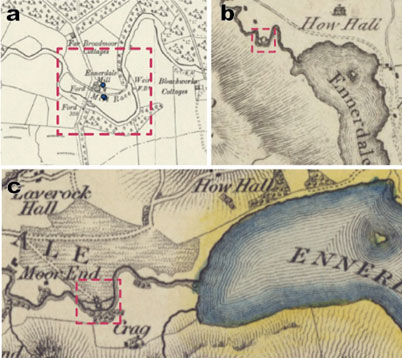

Project
Methods
Locations, mill types, and power usage, if indicated, were manually recorded from maps symbols and text on map sheets. Mill sites were positioned precisely at time of recording (see Accuracy and Georeferencing). After compiling recorded names from the Roy Gazetteer, Roy Gazetteer mill locations were corrected for distortion due to georeferencing of map sheets. Where appropriate, mills from the Roy Gazetteer were collocated to mills at the same site documented from pre-Ordnance Survey (dataset here) and/or Ordnance Survey map data (forthcoming to this viewer; see the Scottish water mills website or Jonell et al. in Explore More for the independent data).
Because of the multiple surveys conducted for each county, multiple records may exist for any mill site. Each survey serves as a ‘snapshot’ in time, recording if the mill was identified at that location.

Figure 6. Three waterwheels at Ennerdale occupying the same site (see red box) noted in the (top) Cumberland map sheets for the Ordnance Survey’s first edition six-inch to the mile survey. Earlier survey leading to Hodskinson and Donald’s 1783 map (middle), although distorted, indicates one mill whereas Greenwood’s 1823 map (bottom) indicates two potential mills sharing a lade immediately downstream of the Ennerdale Water. Sources: (Middle) Hodskinson, J. and Donald, T., 1783, ...this map of the county of Cumberland, surveyed in 1770 & 1771: London, Hodskinson & Donald, 1 map. Shelfmark: EME.s.118. View map. (Bottom) Greenwood C., and Greenwood, J., 1823, Map of the county of Cumberland, from actual survey made in the years 1821 & 1822: London, G. Pringle Jr., 1 map on 3 sheets. Shelfmark: EME.b.3.11. View map
We primarily identified i) clearly demarcated watermill sites and ii) other possible watermill sites from the more ambiguously mapped sites based on their geographic orientation and location relative to rivers and topography (see Position Relative to Rivers). We do note many windmills, steam mills, animal mills and tide mills and are presently working more in detail on these records within our dataset.